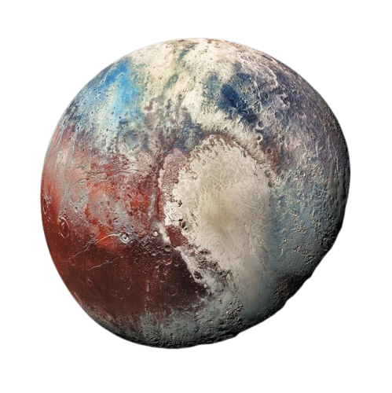
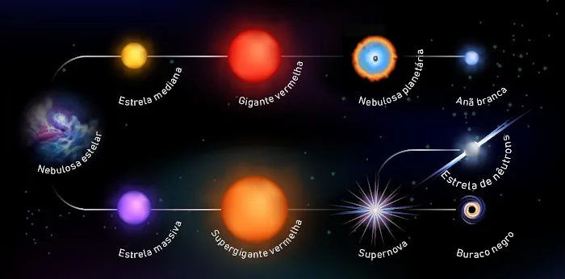
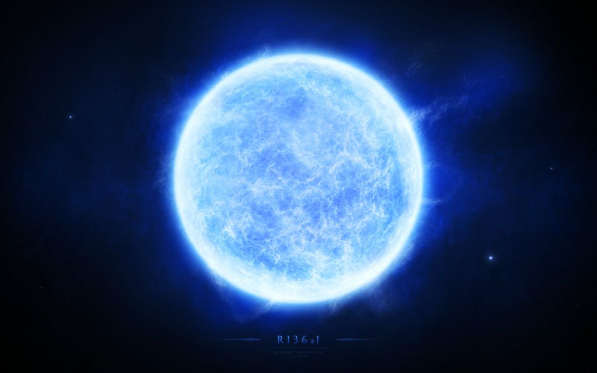
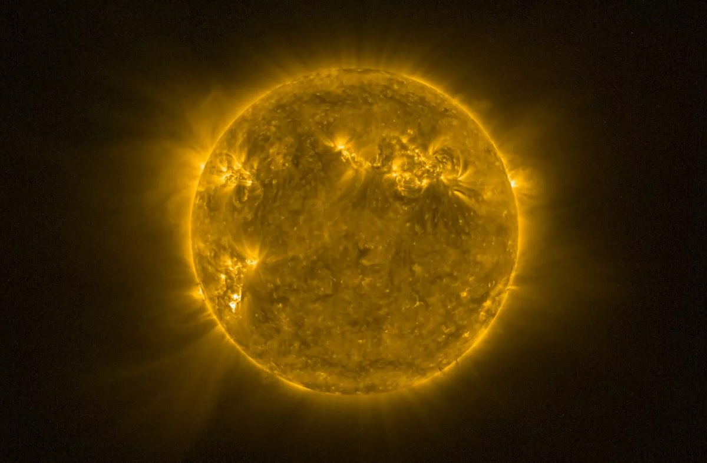
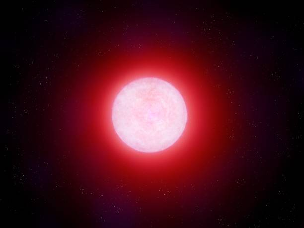
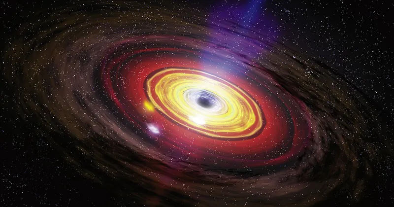

⊙ Plutão:
Antes de 2006, Plutão era considerado um planeta do sistema solar, no entanto, pesquisas
da União Astronômica Internacional (UAI) definiram três conceitos fundamentais para a classificação
dos planetas: Orbitar ao redor de uma estrela; Possuir gravidade própria; Ter uma órbita livre.
Assim, Plutão foi considerado um planeta anão por não possuir uma órbita livre.

⊙ Estrelas:
As estrelas formam-se pela condensação de gases que se aglutinam pela atração gravitacional. As grandes nebulosas,
por exemplo, são “berçários” de estrelas, uma vez que, em seu interior, grandes nuvens moleculares dão origem a
novas estrelas. Quando os gases responsáveis pela formação estelar aproximam-se, a velocidade deles aumenta,
impulsionada pela gravidade local, bem como sua densidade e temperatura. Durante um período, que pode levar até 10
milhões de anos, essas protoestrelas (estrelas em estágio inicial de formação) são compactadas por suas próprias
gravidades até que a pressão e temperatura em seu núcleo sejam suficientes para que os átomos de hidrogênio
fundam-se, produzindo núcleos de hélio. As estrelas que extraem a sua energia da fusão dos átomos de hidrogênio
são chamadas de estrelas de sequência principal, esse tipo de estrela corresponde a cerca de 90% de todas as
estrelas do Universo. A partir do momento em que as estrelas tornam-se capazes de realizar fusões termonucleares,
o seu combustível é consumido, até que a estrela evolua para o seu estágio final de vida. As possibilidades são
muitas: de acordo com a massa da estrela e o seu raio, é possível estimar como será o seu futuro.
⊙ Tempo de vida das estrelas:
O tempo de “vida” das estrelas depende da sua massa: a rapidez com a qual elas consomem o seu combustível
é o que diz quanto tempo a estrela mantém o seu brilho, o Sol, por exemplo, consome menos de 0,01% de sua
massa, anualmente, aumentando sua temperatura e luminosidade. Estima-se que desde o momento em que o Sol
tornou-se uma estrela de sequência principal, 4,6 bilhões de anos atrás, o seu brilho tenha aumentado
mais de 40%. As estrelas de sequência principal, chamadas de estrelas anãs, são a absoluta maioria das
estrelas no Universo, o nosso Sol, por exemplo, trata-se de uma anã amarela, uma estrela de sequência
principal de “baixa temperatura” quando comparada às estrelas mais quentes, como as anãs azuis.

⊙ Estrelas azuis:
São estrelas extremamente quentes, a temperatura de sua superfície pode atingir 30.000 K, são estrelas muito
“novas” em comparação com os demais tipos de estrelas. A maioria dessas estrelas foi criada há menos 40 milhões
de anos.

⊙ Anãs amarelas:
Assim como o Sol, essas estrelas são muito antigas, existindo há bilhões de anos.
O futuro dessas estrelas é o de se tornar uma gigante vermelha.

⊙ Anãs vermelhas:
São as estrelas mais comuns, representam cerca de 73% das estrelas do Universo.
Seu brilho é fraco, são estrelas pouco massivas.

⊙ Vida fora da terra:
Para o pós-doutor em astronomia Sasha Quanz, é uma questão de probabilidade e de tempo para construir
equipamentos de observação espacial mais eficazes para encontrar vida extraterrestre. Em até 25 anos os habitantes
da Terra descobrirão que não são os únicos seres vivos no Universo — é o que acredita o astrofísico suíço Sasha
Quanz. Para o pós-doutor em astronomia, é uma questão de probabilidade e de tempo para construir equipamentos
de observação espacial mais eficazes para encontrar vida extraterrestre fora do Sistema Solar.
⊙ O que é um buraco negro?
Astrônomos e físicos costumam definir os buracos negros como bolsões de matéria extremamente densos;
objetos de massa tão incrível e volume minúsculo que distorcem drasticamente o tecido do espaço-tempo.
“É uma região do espaço em que o campo gravitacional é tão forte que nem a luz consegue escapar”, explica
Rodrigo Nemmen, astrofísico pesquisador do IAG-USP. Segundo Nemmen, para começar a entender os buracos
negros é preciso voltar à Teoria da Relatividade Geral, de Albert Einstein. No início do século 20, o
físico propôs que o universo existia em uma geometria quadridimensional conhecida como espaço-tempo.
“Einstein introduziu o entendimento de que o tempo não era absoluto, mas que também seria uma dimensão
(como a profundidade, largura e altura), tornando-o relativo. Daí vem o nome da teoria”, contou Nemmen.
Mas só isso não era suficiente para explicar os fenômenos espaciais. Assim, o físico, em sua hipótese,
também incluiu a gravidade como uma grandeza importante, que dependeria da massa dos objetos. A presença
de corpos com quantidade significativa de massa curvaria esse espaço-tempo, o que é chamado de campo
gravitacional. Quanto mais massa, maior o campo (curvatura) e a distorção do tempo e do espaço. Na prática
, isso significa que no Sol, por exemplo, o tempo flui mais devagar do que na Terra.

⊙ Como buracos negros se formam?
A maioria dos buracos negros surgem dos restos condensados de uma estrela massiva, ou seja,
o que sobra após a morte de uma estrela grande, com a massa de pelo menos três sóis do tamanho do nosso.
Segundo Nemmen, as estrelas são mantidas por reações de fusão nuclear – o que significa que fundem o hidrogênio
em hélio em seus núcleos –, um processo no qual elas perdem uma pequena quantidade de massa, que se converte em
enorme quantidade de energia. É daí que vem o seu brilho natural. Com o tempo, esse combustível acaba, e as
estrelas morrem. Antes de isso ocorrer, o equilíbrio favorece a gravidade, e o núcleo começa a entrar em
colapso. Algumas estrelas, cuja massa é igual ou menor que o nosso Sol, terminam sua evolução como anãs
brancas. Mas, em estrelas maiores – com massa superior a 10 sóis –, a probabilidade é que a sua morte cause
um colapso gravitacional, explodindo em uma supernova e deixando para trás um buraco negro.